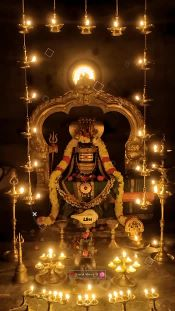
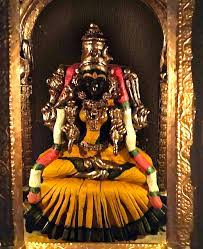
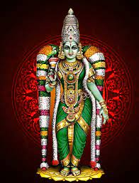
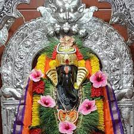
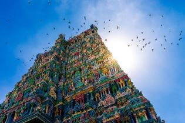

ARUNACHALA SIVA DEVASTHANAM
DD / MM / YY
Home
Contact us : 911022432
About
Sevas & Darshanams
Temple timings
Donations
|| ఓం నమః శివాయ || ఓం శ్రీ మాత్రే నమః ||
----------------------శ్రీరస్తు, శుభమస్తు, అవిఘ్నమస్తు---------------------
తేది ... 4 - 2 - 2024,
వారం ... భాను వాసరే (ఆది వారము),
శ్రీ శోభకృత్ నామ సంవత్సరం,
ఉత్తరాయణంహేమంత ఋతువు,పుష్య మాసం,బహుళ పక్షం,
తిధి : నవమి మ 12.49 వరకు
తదుపరి దశమి
నక్షత్రం : అనూరాధ తె 3.39 వరకు
తదుపరి జ్యేష్ట
యోగం: వృద్ధి ఉ 8.33 వరకు
తదుపరి ధృవం
కరణం : గరజి మ 12.49 వరకు
వణిజ రా 12.45 వరకు
అమృతకాలం : సా 4.57 - 6.36 వరకు
దుర్ముహూర్తం : సా 4.22 - 5.07 వరకు
వర్జ్యం : ఉ 7.05 - 8.44 వరకు
రాహుకాలం : మ 4.30 - 6.00 వరకు
యమగండకాలం : మ 12.00 - 1.30 వరకు
సూర్యరాశి : మకరం
చంద్రరాశి : తుల
సూర్యోదయం : 6.36
సూర్యాస్తమయం : 5.53
Today's Events
1. Abhishekam 5am
2. Ashtotram 6am
3. Soundarya Lahari 11am
4. NithyaAnnadanam 12.30 noon
5. kamakshi - Mukhapanchasati parayanam 6.30pm
* About Temple *
The form and meanings in this temple are designed to function as the
place where it is the link between man and the divine, to help his progress to spiritual knowledge and truth, his liberation it calls moksha.They provide a place for worship, spiritual contemplation, and participation in religious rituals and festivities.
The Hindu temple architecture in India is renowned for its profound symbolism, intricate detailing, and spiritual significance.
Worshipping Shiva elevates you on spiritual level, removes ill-effects of planetary Dosha,
grants prosperity and gainful results in business and career, also gives protection from untimely death.
A simple puja can be conducted at this temple by the devotee, or by a priest on the devotee's behalf. The effects of the puja have been experienced by many thousands of devotees.
In mysterious ways, wealth and gold will find their way to the person who has had a puja conducted at the temple.
It is not about community or some sects personal Ritualistic worship, this is entirely Shastrokta to worship Shiva at Poornima and Amavasya, Full moon and New Moon. These are two extreme phases and faces of Moon, There are certain kind of special energies and atmosphere which engulfs these Both extreme days, Shastra has different Rituals and Worship Methods to appease Shiva on These days.
Photo Gallery




